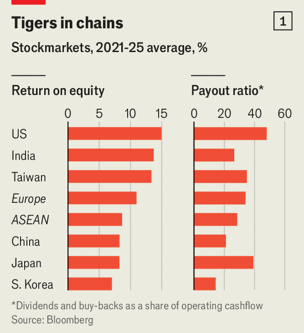

Business | Shaking up the boardroom
Asia’s capitalists will need to fight for their revolution
They cannot rely on politicians alone to fix the region’s abysmal corporate governance
February 12th 2026

When Abe Shinzo set out to revive Japan’s economy as prime minister in the 2010s, he couldn’t ignore the torpor of its companies. Profits were meagre. Enormous cash piles sat idle on balance-sheets. Cross-holdings between businesses kept activist investors at bay.
The reforms he pursued breathed fresh life into Japan Inc. In the ten years prior to the introduction of a new corporate-governance code in 2015, Japanese companies delivered a return for shareholders, including dividends, of roughly zero. Since then they have returned around 170%, comfortably outperforming their European peers. Activists have flocked to Tokyo and shaken management teams into selling off underperforming businesses and handing cash to shareholders through buy-backs. Last year listed Japanese firms generated a return on equity of 8.6%—not spectacular, but up from an average of 6.3% between 2010 and 2015. In the past five years they have paid out dividends and buy-backs equivalent to a respectable 33% of operating cashflow.

Yet Japan’s still unfinished corporate-governance revolution may now be under threat. On February 8th Takaichi Sanae, prime minister since October, won a decisive victory in a snap election. Equity investors, cheered by her promises of fiscal stimulus, sent stocks up by 3% the next day. Ms Takaichi, however, is hardly a champion of their interests. “I think there has been a trend of too much focus on shareholders,” she said in November, imploring firms to consider “their contribution to the broader society”. Ms Takaichi has promised changes to the corporate-governance code that would steer money towards employees.
A reversal in Japan would reverberate across Asia. Inspired by the country’s success, others in the region have started making similar efforts. They are sorely needed. Profits and the portion of them paid to shareholders are underwhelming in many countries (see chart 1). Insufficient disclosure, insider dealing and deferential boards are common. Families or the state often hold majority stakes in big companies, and pay little heed to the interests of minority shareholders. The portion of shares that can be bought, known as the “free float”, averages 63% across the region, compared with 77% in Europe and 94% in America (see chart 2). Many countries’ politicians know change is required. But as America’s shareholder revolution a half-century ago shows, lasting change cannot simply be mandated.
Asia’s demography makes corporate reform an urgent task. Japan, South Korea and Taiwan are already grappling with the burden of ageing populations. China is not far behind. Even poorer countries such as Thailand are quickly getting old. Without rising equity markets, supporting Asia’s growing number of retirees will become ever harder. Pensions are already stingy in much of the region.
Many countries have thus closely watched Japan’s reforms. Overseas capital has flooded into its market: since 2023 foreigners have bought ¥8.7trn ($55bn) more of shares listed on the Tokyo Stock Exchange than they have sold, helping to lift valuations. Other Asian countries want in on the action.
Closest behind is South Korea. Since 2024 it has introduced various changes including a new fiduciary obligation for company managers and a tax perk for businesses that pay significant dividends. Last year its companies bought back a record $14bn-worth of shares. Some hold on to them, making it easier to fend off pesky activists. But a law currently under debate in the national assembly would require repurchased shares to be torched. Although foreign investors were put off by the declaration of martial law in late 2024, they have begun wading back in since the election in June of Lee Jae-myung, a shareholder-friendly president, notes Peter Kim of KB Securities, a broker in Seoul.
China has also begun pursuing reform. Its companies are beating foreign rivals at home and abroad. Yet over the past decade they have, as a whole, generated next to no return for shareholders. Profits remain elusive and are rarely distributed. Ferocious domestic competition is part of the explanation. But so is poor corporate governance. Officials have published a flurry of new rules over the past two years in an effort to improve the situation. The focus has been to tighten constraints on corporate insiders collectively known as guanjian shaoshu (“the crucial few”).
Controlling owners, which the vast majority of listed Chinese companies have, are now vested with a fiduciary duty to all shareholders. Independent audit committees—the standard in the West—are being introduced. As in Japan, China’s securities regulator now requires companies whose shares are trading below the book value of assets to disclose plans to boost their price and report on progress. Over 200 have done so. In addition, Chinese officials have shown interest in reforming the governance of state-owned enterprises (SOEs), which make up about a quarter of listed firms. They have added “market-value management” as a criterion on which SOE bosses are evaluated.
Progress elsewhere in Asia, however, has been slower. In some countries, favourable winds have cooled interest in reform. Many of Taiwan’s biggest companies have benefited from roaring demand for data centres needed for artificial intelligence. India’s stockmarket has been propelled by a surge in interest from retail traders.
Then there is South-East Asia. Last year Thailand established a programme aimed at small listed firms. It offers sweeteners such as tax perks and publicity roadshows in exchange for releasing plans to boost valuations. It is, however, voluntary. In December Malaysia concluded its own three-year programme in which participating businesses attended gabfests and received best-practice guidebooks. In its review, the government boasted of widespread uptake—but did not find a clear trend of companies improving their profitability or valuations.
The softly-softly approach of South-East Asia’s governments may reflect reluctance to upset their countries’ politically connected tycoons. But some investors are losing patience. In January MSCI, an index provider, said it was concerned about the “fundamental investibility” of Indonesia amid concerns that majority owners had used opaque holding structures to exaggerate their free float, get their companies included in share indices and, as a result, boost their market value. That was followed by a fire sale, after which Indonesia’s securities regulator said it would double the minimum free float to 15%.
Progress on corporate governance in Asia has been uneven in part because it has relied on the zeal of politicians and regulators. Whereas the shareholder-primacy revolution that began in America in the 1970s was led from the bottom up by swashbuckling corporate raiders, in Asia it has been led top-down by the state.
Wider and deeper reform may require a shift in approach. “Ultimately, corporate governance is a cultural issue,” says Christopher Leahy of the Asian Corporate Governance Association, an advocacy group. On this it is South Korea, more than Japan, that may offer inspiration. In recent years its many retail investors have become increasingly vocal, co-ordinating grassroots activist campaigns and pushing politicians such as Mr Lee to pursue reforms. If Asia’s capitalists want their revolution, they will need to fight for it. ■
To track the trends shaping commerce, industry and technology, sign up to “The Bottom Line”, our weekly subscriber-only newsletter on global business.